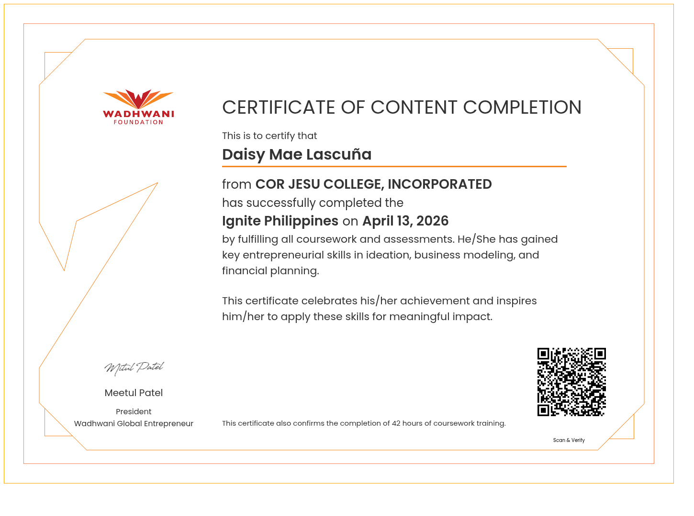
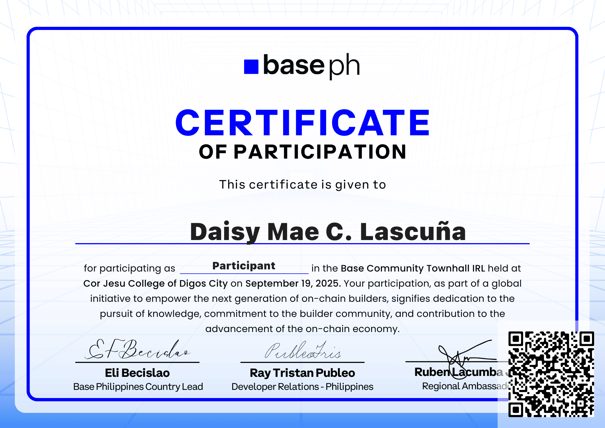
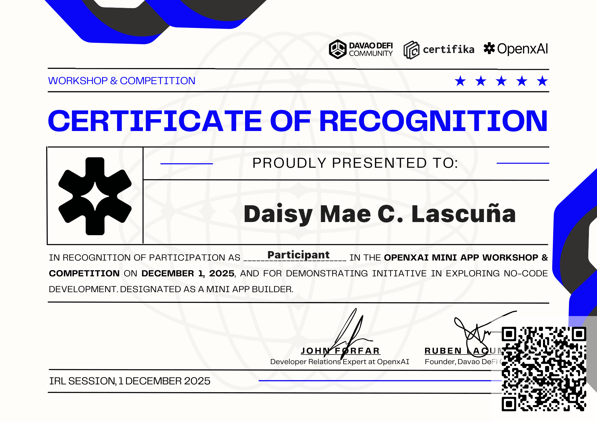
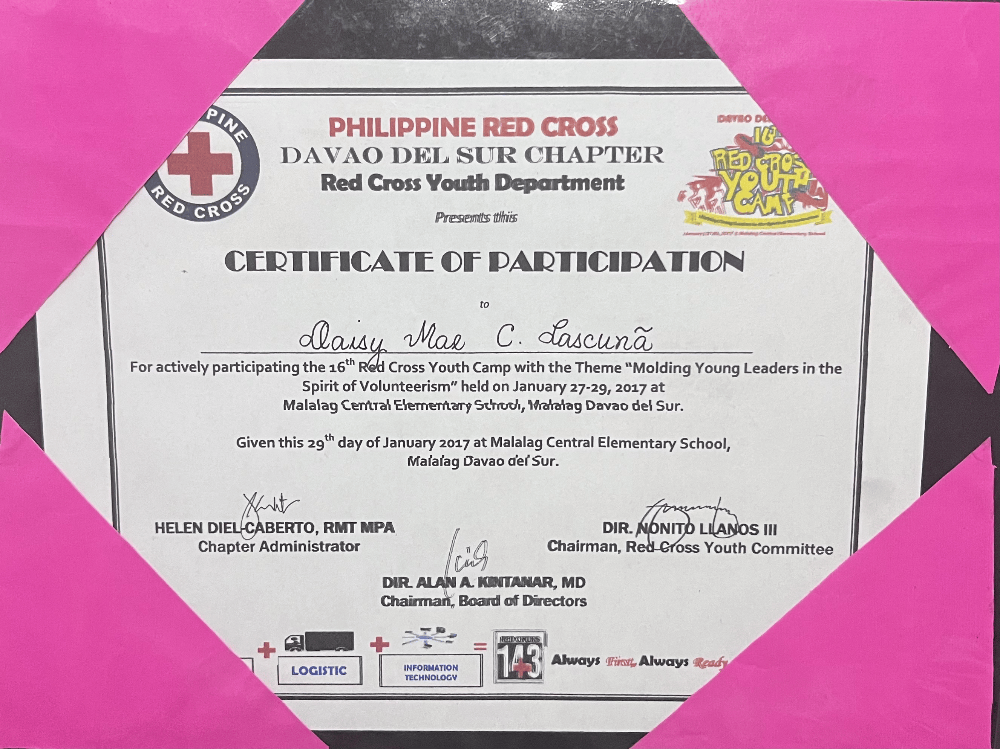
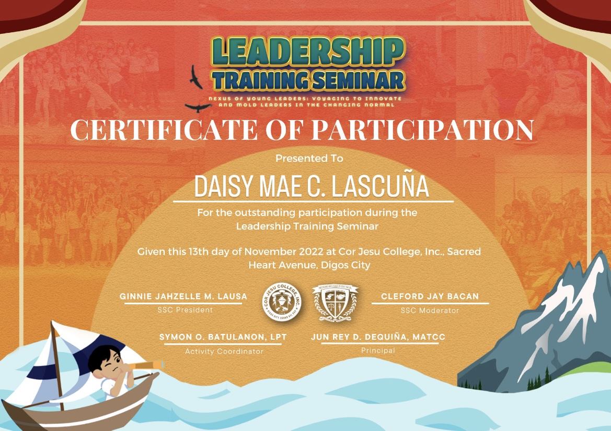

Proof of learning
Certificates & Awards

Socio-Cultural Secretary, CCIS Local Government Unit
resented in recognition of outstanding service and dedication as the Socio-Cultural Secretary of the College of Computing and Information Sciences Local Government Unit for the school year 2024–2025.

Ignite Philippines Entrepreneurship Program Completer
Awarded by Cor Jesu College, Incorporated for successfully completing the Ignite Philippines program on April 13, 2026, having fulfilled all coursework and assessments covering key entrepreneurial skills in ideation, business modeling, and financial planning.

Base Community Townhall IRL
Certificate of participation from the basePH community townhall event, 2025.

OpenXAi Mini Workshop and Competition
Certificate of participation from the OpenXAi mini workshop and competition by basePH, 2025.

AR Seminar-Workshop Participant
Awarded for participating in the Augmented Reality (AR) Seminar-Workshop organized by ACSS of CCIS, held on November 29, 2022 at CLB4, Cor Jesu College, Inc.

GSP Provincial Encampment Participant
Awarded for participating in the 39th Girl Scouts of the Philippines Provincial Encampment held at Matanao Central Elementary School, Matanao, Davao del Sur, from November 30 to December 4, 2016.

Photo Walk Participant, Innovation Week 2023
Awarded for participating in the Photo Walk activity organized by the Association of Computer Studies Students (ACSS) of CCIS in celebration of Innovation Week, held on February 14, 2023 at Cor Jesu College, Digos City.

16th Red Cross Youth Camp Participant
Awarded for actively participating in the 16th Red Cross Youth Camp themed "Molding Young Leaders in the Spirit of Volunteerism," held on January 27–29, 2017 at Malalag Central Elementary School, Malalag, Davao del Sur.

Red Cross Youth Emergency Care Training
Awarded for actively participating in the Red Cross Youth Emergency Care Training held at Cor Jesu College on January 28, 2023.

Leadership Training Seminar Participant
Awarded for outstanding participation during the Leadership Training Seminar held on November 13, 2022 at Cor Jesu College, Inc., Sacred Heart Avenue, Digos City.